TI Draft: April 18th
Galactic Council Briefing: Prepare for conquest.
Draft Rules & Tutorial
- Speaker Order: Determines table seating and strategy card priority.
- Selection: Choose 1 of 9 combinations of Faction + Slice + Speaker.
- New Players: Please watch the briefing below.
Naaz-Rokha Alliance
Speaker #1

Map Slice
Faction Playstyle
Exploration specialists who uncover relics and command powerful mechs that transform for space combat.
Federation of Sol
Speaker #2

Map Slice
Faction Playstyle
Logistics masters with unrivaled infantry deployment and command token generation.
The Ghosts of Creuss
Speaker #3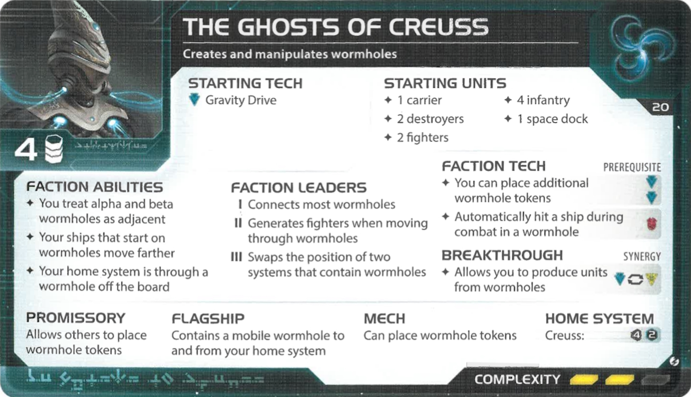
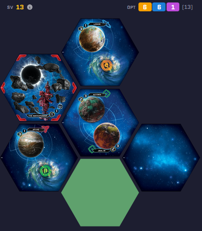
Map Slice
Faction Playstyle
Wormhole manipulators who can strike from any corner of the galaxy using the delta wormhole.
Emirates of Hacan
Speaker #4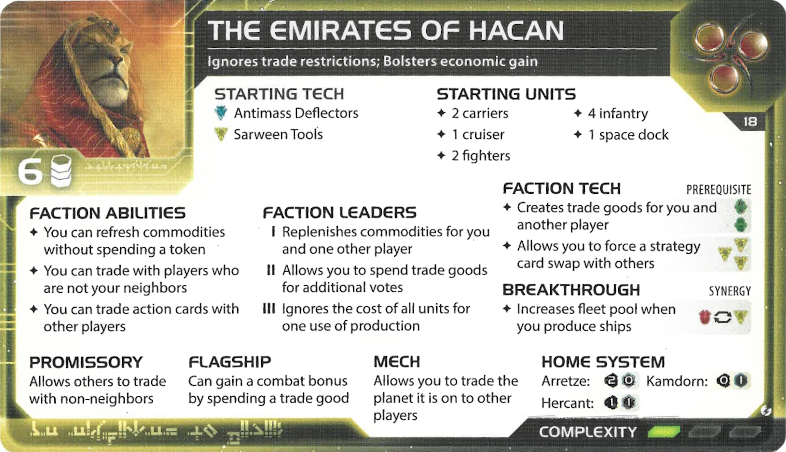
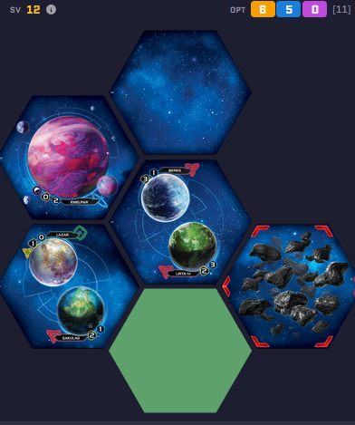
Map Slice
Faction Playstyle
The merchant kings who can trade with anyone and barter with action cards to control the board's economy.
Barony of Letnev
Speaker #5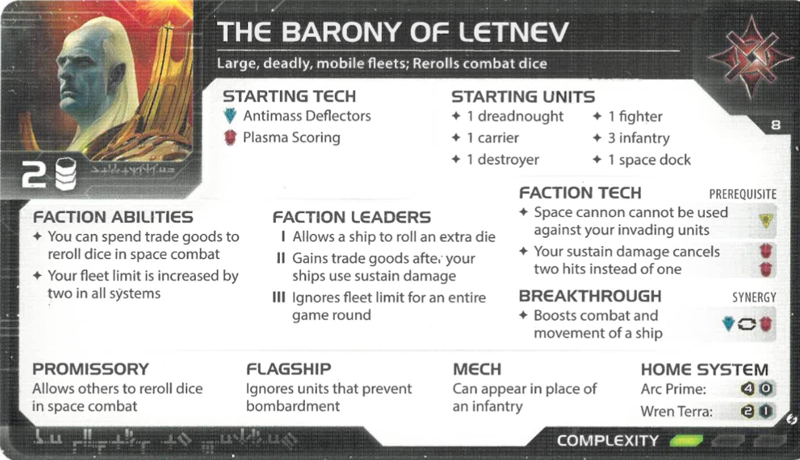
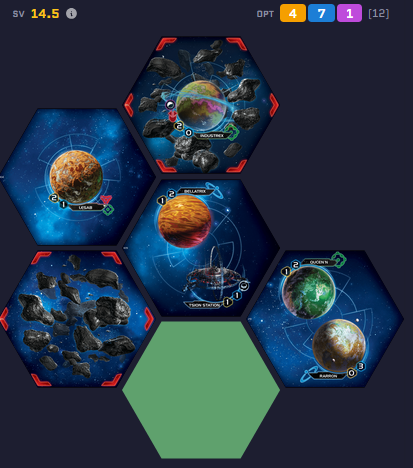
Map Slice
Faction Playstyle
A military powerhouse focusing on massive fleets, industrial production, and non-euclidean shielding.
The Empyrean
Speaker #6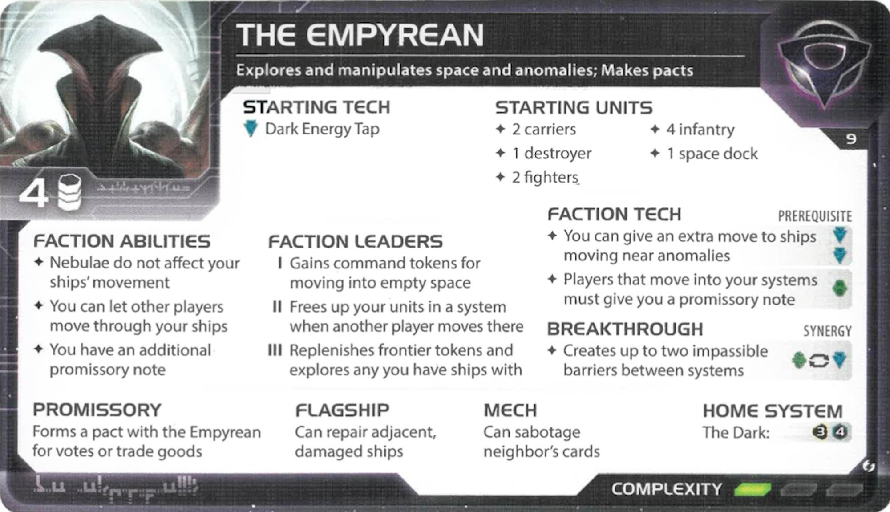
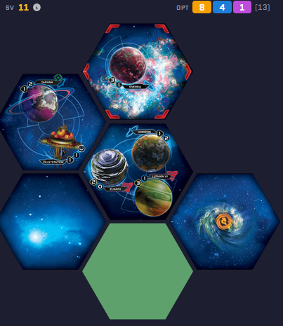
Map Slice
Faction Playstyle
Diplomats of the deep void who thrive on cooperation and movement through nebulae.
Xxcha Kingdom
Speaker #7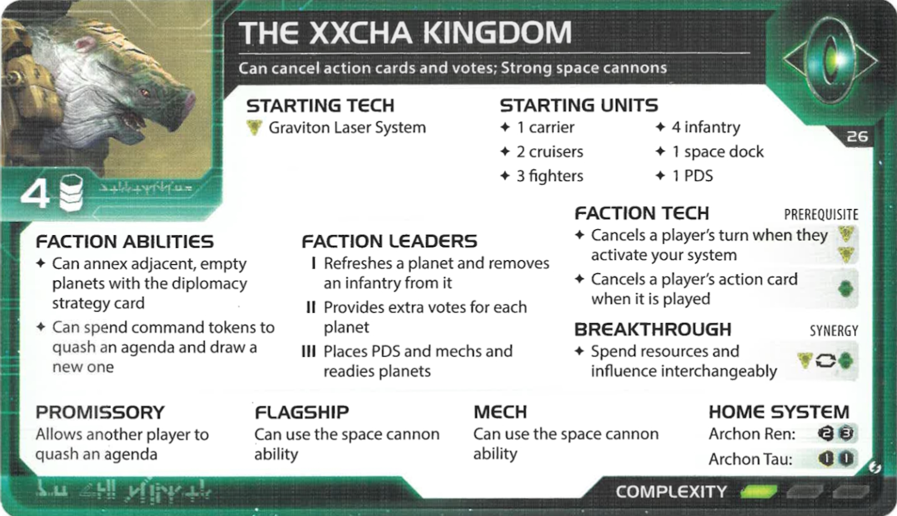

Map Slice
Faction Playstyle
Peaceful defenders who use orbital cannons and political mastery to stall aggression.
Sardakk N’orr
Speaker #8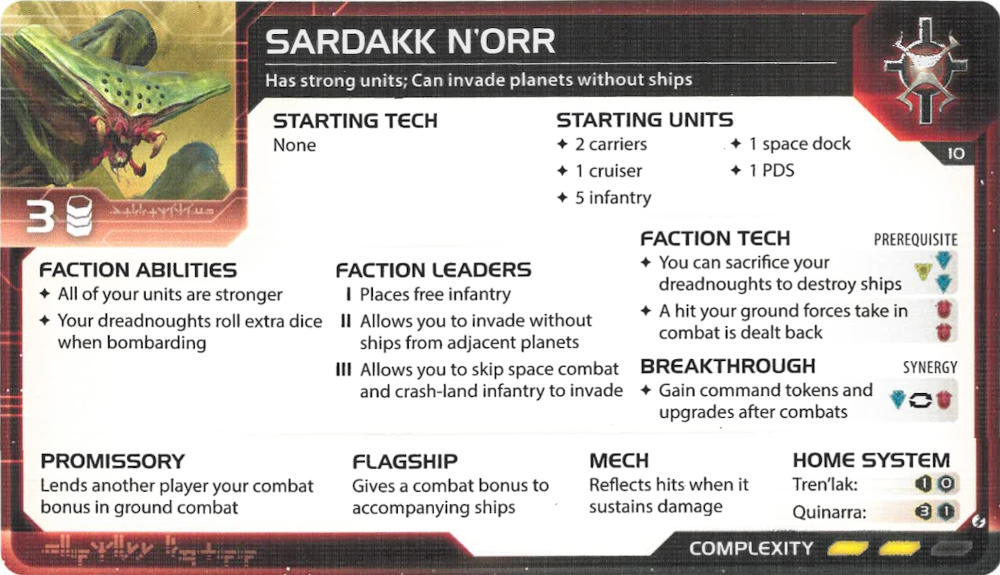
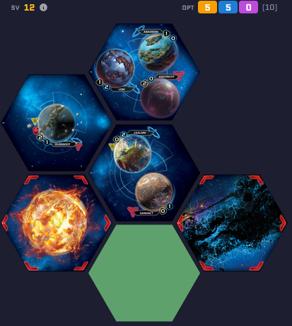
Map Slice
Faction Playstyle
The eternal swarm. Unmatched in raw combat strength with a permanent bonus to all attack rolls.
The Last Bastion
Speaker #9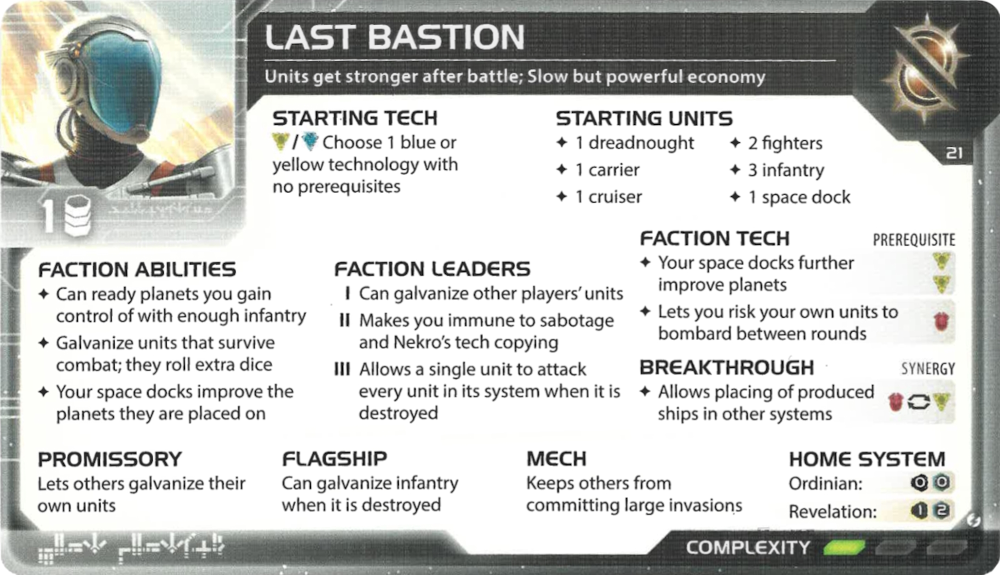
Map Slice
Faction Playstyle
A stalwart defensive faction designed to hold their home slice against all odds.